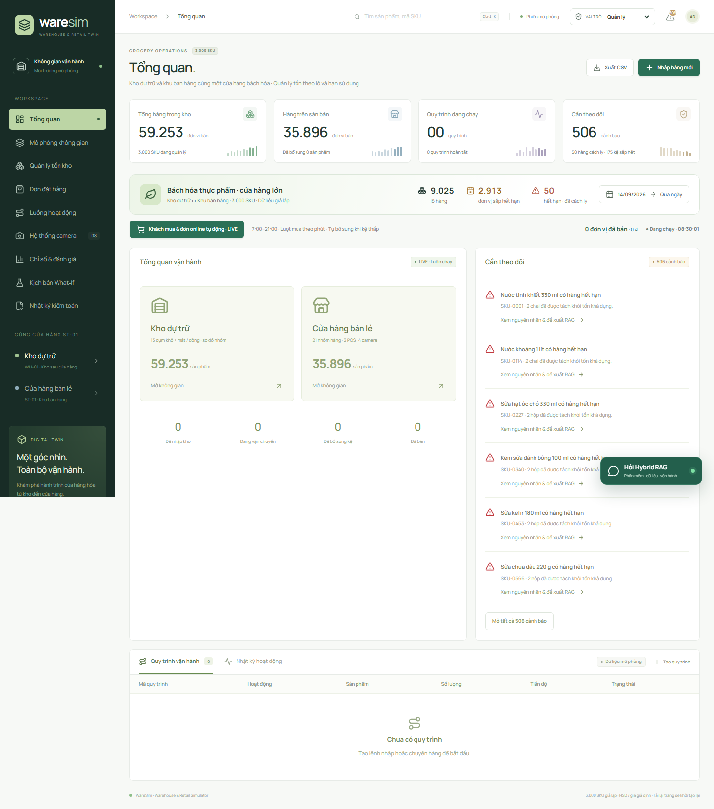
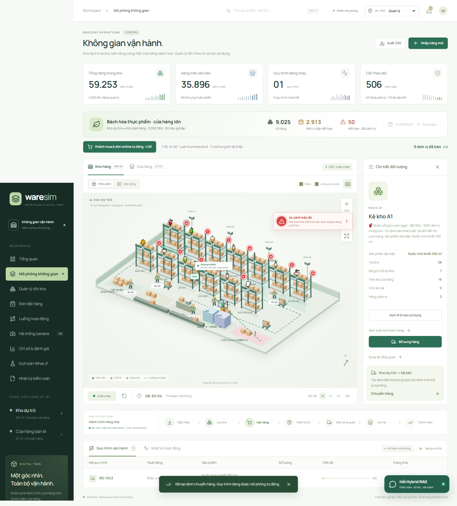
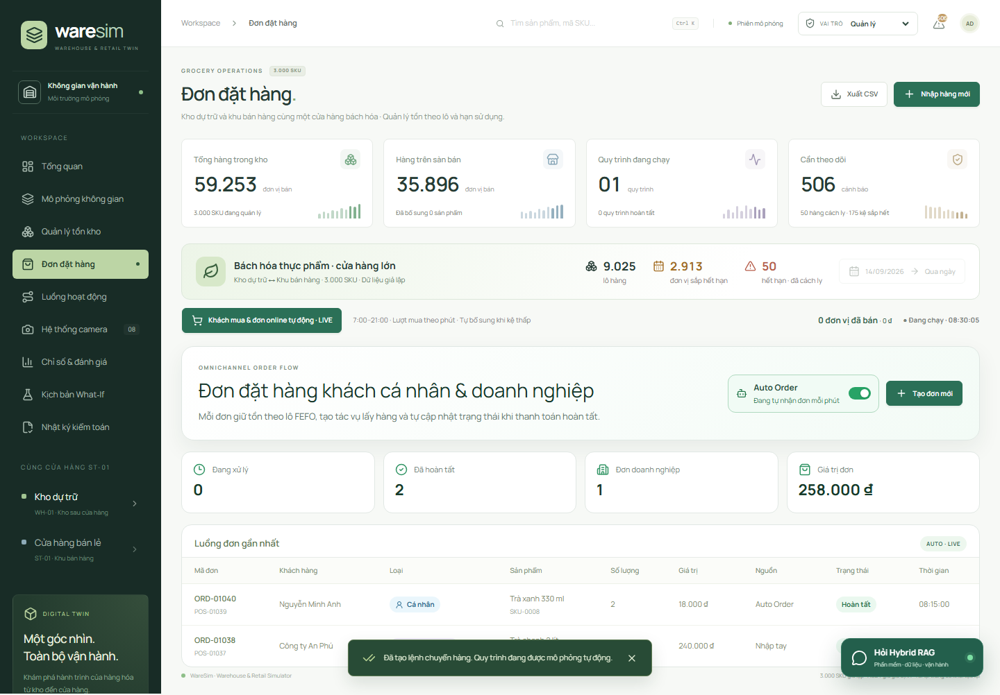
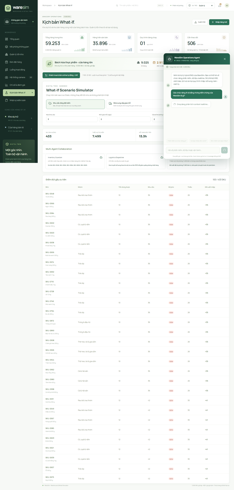
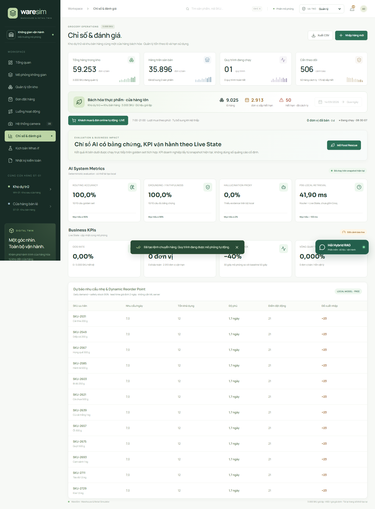
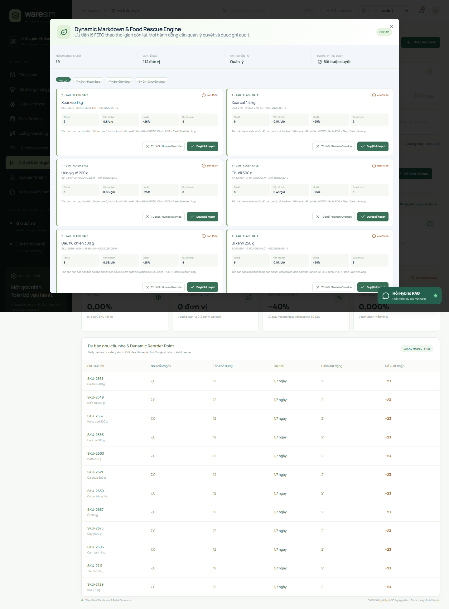
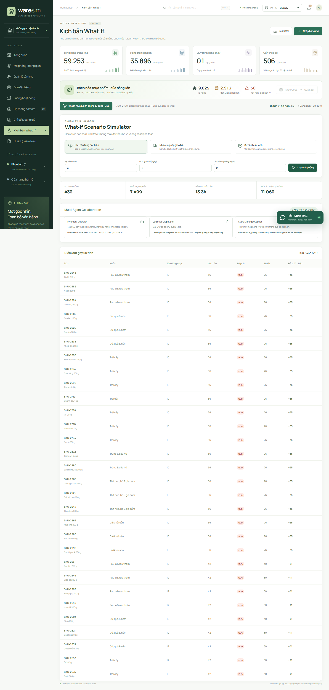

Phiên bản 2.0 — cập nhật ngày 15/09/2026
Phạm vi: Digital Twin kho – cửa hàng, 3.000 SKU, 9.025 lô, FEFO/HSD, đơn hàng, Auto Order, Hybrid RAG, What‑If, Food Rescue, RBAC và Audit.
Tài liệu này thay thế phiên bản 1.0 vốn mô tả ML service và Decision Center không còn khớp kiến trúc hiện tại. File gốc được giữ nguyên để đối chiếu.
Nguyên tắc vận hành: dữ liệu của phiên là nguồn sự thật; AI chỉ diễn giải hoặc khuyến nghị; con người phê duyệt hành động có tác động; kết quả phải kiểm chứng qua Live State, Event History và Audit.
WareSim AI là prototype Digital Twin mô phỏng đồng thời kho dự trữ WH‑01 và cửa hàng ST‑01. Hệ thống kết hợp quy tắc tồn kho xác định, truy xuất dữ liệu theo ngữ cảnh và LLM tùy chọn để hỗ trợ quyết định có bằng chứng.
| Thành phần | Quy mô/phạm vi |
|---|---|
| Danh mục | 3.000 SKU thuộc 21 nhóm hàng |
| Quản lý lô | 9.025 lô có ngày sản xuất, ngày nhận và HSD |
| Vùng bảo quản | Khô, mát và đông |
| Luồng nghiệp vụ | Nhập hàng, bổ sung kệ, bán/POS, cách ly |
| Tự động hóa | Khách mua nền và Auto Order trong giờ mở cửa |
| Hỗ trợ AI | Hybrid RAG, Dynamic Reorder, Food Rescue, What‑If |
| Quản trị | RBAC, prompt guardrail, Human Override, audit hash chain |
| Lớp | Vai trò | Nguồn sự thật |
|---|---|---|
| Canonical simulator | FEFO, reservation, nhập/chuyển/bán, HSD, bất biến tồn | Live State theo SKU/lô |
| Rule Engine | Hết kệ, tồn thấp, cận hạn, hết hạn/cách ly | Luật xác định |
| Hybrid RAG | Truy xuất state, lịch sử, SOP rồi mới gọi Groq | Context đã truy xuất |
| Decision support | Dynamic Reorder, Food Rescue, What‑If, ba agent | Bản sao snapshot |
| Governance | RBAC, guardrail, human approval, audit | Chính sách và nhật ký |

Hình 1 — Dashboard tổng quan lấy số liệu trực tiếp từ Live State.
Giới hạn: đây là prototype dùng dữ liệu giả lập, chưa phải WMS/POS/ERP thật. Trạng thái hiện sống trong phiên trình duyệt và reset khi tải lại.
cd "D:\Documents\AI Talent\Building Blocks" npm install npm run dev -- --host 127.0.0.1 --port 3000
Mở http://127.0.0.1:3000. Không cần ML service, Python server hoặc database để sử dụng core simulator.
| Vai trò | Xem dữ liệu | Tạo nghiệp vụ | Duyệt Food Rescue | Audit |
|---|---|---|---|---|
| Nhân viên sàn | Có | Chỉ bổ sung theo quyền | Không | Không |
| Quản lý | Có, gồm tài chính | Nhập/chuyển/bán/đơn hàng | Có | Xem |
| Kiểm toán viên | Chỉ đọc theo policy | Không | Không | Xem và kiểm tra chuỗi |
Bảo mật khóa: GROQ_API_KEY chỉ đặt trong .env.local hoặc Cloudflare secret, không dùng tiền tố VITE_ và không đưa vào Git.

Hình 2 — Hoạt ảnh tác vụ gắn với trạng thái nghiệp vụ thay vì minh họa ngẫu nhiên.
Bất biến kiểm chứng: kho + kệ + transit + backroom + cách ly = tồn ban đầu + đã nhập − đã bán.
Hàng hỏng hoặc hết hạn được đưa khỏi tồn khả dụng vào khu cách ly. Quản lý phải kiểm đếm và xử lý theo SOP; không tự sửa số tồn để làm đẹp kết quả.

Hình 3 — Đơn hàng cá nhân/doanh nghiệp dùng chung state và quy tắc FEFO với simulator.
Quản lý có quyền bật hoặc tạm dừng Auto Order. Trong giờ mở cửa 07:00–21:00, mô phỏng sinh một nhu cầu mỗi phút; đơn cá nhân thường 1–3 đơn vị và định kỳ có đơn công ty/đơn vị 4–10 đơn vị.
| Tình huống | Kết quả mong đợi |
|---|---|
| Đặt lớn hơn tồn kệ khả dụng | Từ chối, không tạo tồn âm |
| Hai đơn cùng giữ một SKU | Reservation ngăn giữ trùng |
| Lô hết hạn giữa quy trình | Tác vụ và đơn liên kết bị hủy |
| Tắt Auto Order | Không ghi thêm đơn tự động |
Hiểu đúng “Auto”: bản miễn phí tự chạy khi tab trình duyệt đang mở. Chạy 24/7 đa người dùng cần Cloudflare Cron và D1/Durable Objects hoặc backend persistent.
| Luật | Điều kiện | Hành động gợi ý |
|---|---|---|
| OUT_OF_STOCK | Tồn kệ bằng 0 | Bổ sung FEFO hoặc nhập nếu kho hết |
| LOW_STOCK | Tồn kệ ≤ reorder point | Tính sức chứa và kho khả dụng |
| EXPIRY_NEAR | Lô vào cửa sổ HSD | Ưu tiên bán, markdown hoặc chuyển tặng |
| EXPIRED_QUARANTINE | Có hàng hết hạn cách ly | Kiểm đếm và xử lý theo SOP |
Mỗi cảnh báo trình bày phát hiện, nguyên nhân, ảnh hưởng, bằng chứng Live State và đề xuất có nguồn. AI chỉ giải thích cảnh báo đã được Rule Engine xác định.

Hình 4 — Câu trả lời hiển thị model, nguồn, snapshot và dữ liệu RAG gốc để đối chiếu.

Hình 5 — Chỉ số có thể tái chạy từ cùng snapshot; mục tiêu pilot không được trình bày như kết quả đã đạt.
Mô hình nhẹ dùng daily demand, lead time và safety stock 95%. Kết quả phục vụ tham khảo trong prototype, không thay thế chính sách mua hàng thực.

Hình 6 — Food Rescue dựa trên lô FEFO và thời gian còn lại.
What‑If chạy trên bản sao Live State, tuyệt đối không thay đổi tồn thật của phiên.
| Agent | Nhiệm vụ |
|---|---|
| Inventory Guardian | Xác định SKU và lô có rủi ro |
| Logistics Dispatcher | Ưu tiên luồng bổ sung/điều phối |
| Store Manager Copilot | Tổng hợp tác động và lượng đặt dự phòng |
Các agent dùng cùng một snapshot để tránh mâu thuẫn số liệu.

Hình 7 — Kết quả What‑If gồm tác động, ưu tiên và đề xuất của từng agent.
Giao diện ẩn dữ liệu hoặc vô hiệu hóa nút theo vai trò, đồng thời handler kiểm tra quyền lần nữa trước khi thực thi. Không dựa chỉ vào việc ẩn nút.
Guardrail chạy trước Query Router và lặp lại phía server Groq để chặn:
Mỗi bản ghi có sequence, previous hash và hash. Các quyết định Food Rescue, chạy What‑If, thao tác bị RBAC từ chối, tạo đơn và bật/tắt Auto Order đều có thể được ghi trong phiên.
Audit hiện chứng minh bản ghi không bị sửa trong phiên; audit pháp lý cần kho append‑only phía server.
Phạm vi kiểm thử gồm quy mô dữ liệu, FEFO nhiều lô, reservation, sức chứa, HSD, thanh toán, bất biến tồn, nửa đêm, Auto Order, RBAC, guardrail, audit, Food Rescue, What‑If, RAG và giao diện desktop/mobile.
| Hiện tượng | Cách xử lý |
|---|---|
| LOCAL FALLBACK | Kiểm tra GROQ_API_KEY phía server, mạng và thông báo lỗi |
| Không tạo được tác vụ | Kiểm tra vai trò, lượng khả dụng, reservation, sức chứa, HSD |
| Hoạt ảnh không chạy | Kiểm tra prefers-reduced-motion; dùng 1×/2× |
| Reload mất trạng thái | Đúng giới hạn prototype; cần persistence |
| Expected khác Actual | Kiểm tra snapshot, events và tác vụ phát sinh |
npm run build npx wrangler login npx wrangler secret put GROQ_API_KEY --config .output/server/wrangler.json npm run deploy:cloudflare
Không có Groq vẫn dùng được simulator, Rule Engine, RAG deterministic, metrics và What‑If. Health endpoint là /api/v1/health. API bridge ERP/POS/WMS khóa ghi mặc định nếu chưa đặt WARESIM_BRIDGE_TOKEN.
| Thời lượng | Nội dung |
|---|---|
| 0:00–0:40 | Bài toán, 3.000 SKU/9.025 lô và snapshot dùng chung |
| 0:40–1:40 | Tạo bổ sung FEFO, quan sát hoạt ảnh và tiến độ |
| 1:40–2:25 | Tạo đơn doanh nghiệp, Auto Order và trạng thái POS |
| 2:25–3:15 | Mở cảnh báo, hỏi RAG và đối chiếu nguồn |
| 3:15–4:15 | Food Rescue, What‑If, ba agent, Human‑in‑the‑loop |
| 4:15–5:00 | Metrics, RBAC/audit, test, giới hạn và roadmap |
Theo cổng thông tin chính thức, Bảng C tập trung thiết kế, xây dựng, đánh giá và triển khai hệ thống AI với dữ liệu, mô hình, chỉ số, bảo mật và đạo đức. Trọng tâm đánh giá gồm giá trị thực tiễn, phương pháp, nguồn gốc dữ liệu, mức độ làm chủ, kết quả thử nghiệm, khả năng kiểm chứng đầu ra và khả năng triển khai.
| Trọng tâm Bảng C | Minh chứng WareSim | Việc cần củng cố |
|---|---|---|
| Giá trị thực tiễn | OOS, Food Rescue, đơn hàng, điều phối | Phỏng vấn người dùng/pilot |
| Dữ liệu và mô hình | 3.000 SKU/9.025 lô, giả định công khai | Hiệu chỉnh dữ liệu thật được phép |
| Chỉ số và kiểm chứng | Golden set, KPI Live State, 28 test | Benchmark độc lập và user study |
| Bảo mật và đạo đức | RBAC, guardrail, secret server-side, approval, audit | Threat model sâu hơn |
| Khả năng triển khai | Local-first, Cloudflare, health/API bridge | Persistence và multi-user |
Ứng dụng dùng React, TypeScript, TanStack Start, Playwright, Cloudflare Workers và Groq API tùy chọn. Dữ liệu danh mục là dữ liệu giả lập lấy cảm hứng từ phân loại bách hóa công khai, không phải dữ liệu nội bộ doanh nghiệp.
Yêu cầu Bảng C: PDF dự án tối đa 20 trang; video thuyết trình tối đa 5 phút; video demo tối đa 5 phút; phải kê khai trung thực công cụ AI, dataset, API, thư viện, mã nguồn mở và phần tự xây dựng.
Nguồn thể lệ tham khảo:
Truy cập ngày 15/09/2026. Tài liệu này dùng để xin góp ý chuyên gia, không thay thế mẫu hồ sơ chính thức của Ban Tổ chức.